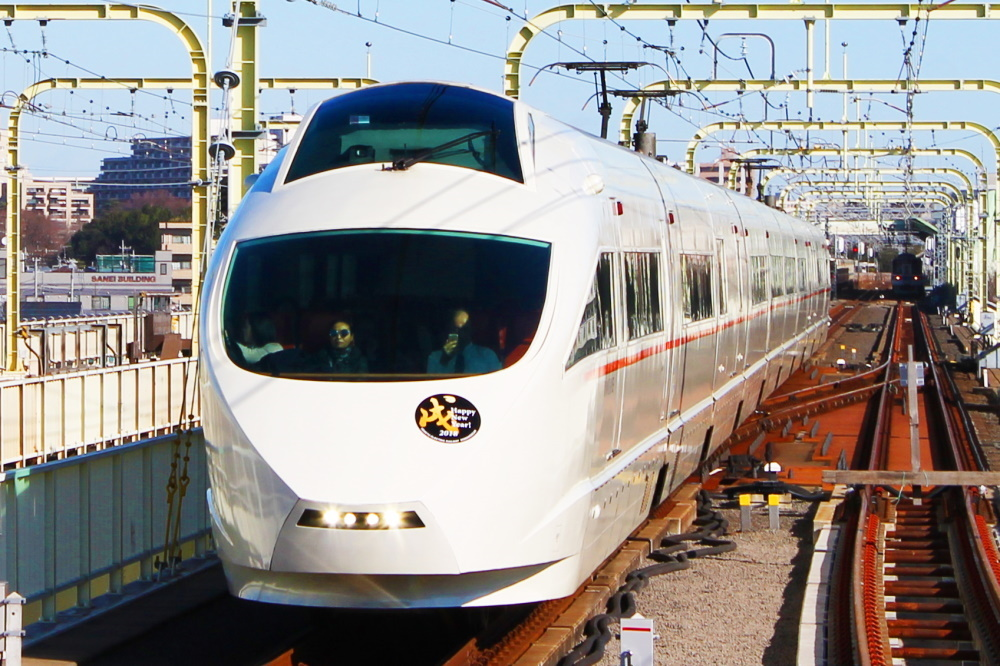

BVE5 改造パッチ一覧

登戸駅。新年HMつけてました。FD対応も行けそうだったのにこんなに早く一線を退くとは。
当サイトで公開中の改造データ一覧です。このページで公開中のデータは他作者の著作物も含まれるため、無断転載・2次利用はお断りいたします。
地下試験線V3 小田急ATS化パッチ
every dayday様の地下試験線を、oer-meel様制作の「小田急線向けATSプラグイン」搭載車両で運転するためのパッチです。
常磐線各駅停車 CS-ATC対応&TIS/TIOS対応パッチ
柏鉄道フォーラム様の常磐線各駅停車を、東京メトロで使用されている「新CS-ATC」搭載車両で運転するためのパッチです。